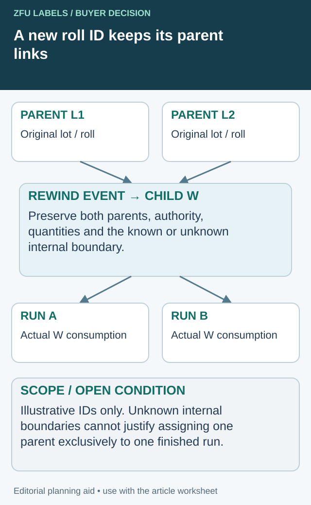

A label supplier identifies a manufacturing lot for review. The food producer can find the delivery, but cannot tell which finished products used each roll. The labels were received correctly and the food batches were recorded correctly; the connection between them is missing.
Build the link at the point of line issue and consumption. Preserve supplier label-lot identity, roll identity and finished-run identity through normal use, partial returns and changes. A barcode on the pack cannot create a relationship that the production records never captured.

Preserve both parents when a new roll contains both
A new wrapper and internal roll number are useful handling identities. They do not erase the material's earlier relationships. When rewinding splits one roll or joins material, record the event as a set of inputs and outputs. The diagram shows an illustrative two-parent case; it does not assert that mixing the proposed materials is technically or commercially permitted.


| Event field | What to preserve | Why it changes retrieval |
|---|---|---|
| Inputs | Original supplier lot/roll plus current status | Retrieves the source material without overwriting it |
| Transformation | Event ID, date, operator record and authorized action | Explains why new identities exist |
| Outputs | Each internal child roll and its declared content | Connects stock returned to the warehouse |
| Position boundary | Known joint/location basis or explicitly unknown | Sets the achievable precision of later containment |
| Consumption | Child roll to actual finished run/component | Carries both upstream links into retrieval |
The GS1 traceability compliance criteria include material-flow identification and transformation relationships. This ledger is an editorial packaging interface, not a claim of GS1 certification or a complete recall system.
Work the unknown boundary honestly
Suppose parent rolls L1 and L2 contribute to child W, and W then supplies runs A and B. If an identified position record connects L1 only to a specific part of W, preserve that evidence and its measurement basis. If the internal boundary was never recorded, do not assign L1 to A and L2 to B simply because that makes the spreadsheet tidy. Both runs may remain potentially connected until the quality owner can resolve or disposition the uncertainty.
Quantity reconciliation can detect an impossible allocation, but a total that balances does not create missing position evidence. Keep the known counts, estimated counts and unsupported boundary separate. Do not fabricate a detailed roll history afterward from a remembered production sequence.
For a split without mixing, record each child back to the same parent and reconcile remaining stock, consumed material and declared losses. For a join, confirm artwork, construction and stock-release compatibility before the action; this mapping does not authorize joining incompatible or held material.
The benefit is a defensible retrieval boundary. The cost is another recording event at the actual rewind operation. If the system cannot maintain position-level history, choose an honest coarser boundary and plan around it rather than advertise precision that the records cannot deliver.
Define the traceability question
Ask what the business needs to retrieve: which finished runs used an identified label lot, and which label stock was used for an identified finished run. The answer may need to include artwork revision and construction, not only the label supplier's name.
Use the actual quality, customer and regulatory requirements to set the necessary detail. This article does not determine a universal retention period, recall scope or legally sufficient traceability system. It provides a purchasing and production interface that can support the responsible system design.
The GS1 Global Traceability Standard provides a broader framework for identifying traceable objects and recording their relationships. A label-roll record should fit the business's real framework rather than become an isolated spreadsheet with incompatible identifiers.
Preserve identity at receipt
Record the label item, artwork revision, construction, supplier lot and roll identifiers available on the delivered stock. Link them to the purchase order and receiving record. If several manufacturing references arrive together, keep them distinguishable.
The co-packer receiving guide separates physical receipt from release for use. Traceability needs both states: knowing where a roll is does not establish that it was authorized or consumed.
If the supplier cannot provide roll-level identity, record the limitation and ask the quality owner what granularity is needed. Do not invent roll numbers afterward and present them as original supplier references. Internal identifiers can help, provided their relationship to the received material is documented.
Capture the connection when stock is issued
Before the run, identify the finished product, packaging version and label components required. Record the rolls actually issued, not only the planned item code. If an operator uses a replacement roll, the record must reflect that event.
Separate front, back and seal components where relevant. A finished product can have more than one label-lot relationship. Recording only the front roll may leave another component untraceable.
The date-and-lot field guide controls printed production data. The material link here is different: it records which physical label supply was used, even when the consumer code does not contain that information.
Use a roll-to-run record
| Event | Record needed |
|---|---|
| Receipt | Supplier item/lot/roll, artwork revision and quantity basis |
| Release | Authorized construction/version and stock status |
| Issue | Finished run, component, roll identity and issue quantity |
| Roll change | Removed and replacement identities with the relevant run point |
| Consumption | Recorded use, setup/reject categories and quantity basis |
| Partial return | Remaining identity, status, location and balance |
| Finished output | Product/run identity and relevant packing boundaries |
| Retrieval | Evidence connecting either starting point to the affected records |
The record is an editorial interface model. The quality and operations teams should decide the supported events, units and system controls for the actual process.
Handle partial rolls and shared runs
A roll may span more than one finished run, and one run may consume several rolls. The records should represent those relationships without forcing a false one-to-one mapping. Preserve the relevant boundaries and quantity basis.
When a partial roll returns to stock, keep its identity and status. If it is rewound, split or reworked, record the new internal identity and its relationship to the original material. Do not let a new wrapper erase the previous history.
For a hypothetical preserve range, the same approved label construction might be used across two packing days. The system needs to show which roll supplied each run, while keeping artwork variants separate. Shared material does not mean the product identity can be collapsed.
Reconcile exceptions before closing the run
Record labels used for setup, inspection or rejected packs under the actual procedure. Keep unexplained balances visible rather than adjust them silently to make the arithmetic close. Quantity uncertainty can limit the precision of a later investigation.
The serialized-label guide addresses individual code-record reconciliation. Use it where serialization applies, but do not assume every label-lot traceability system requires a unique consumer code on each piece.
Likewise, a sophisticated identifier does not replace disciplined line issue and returns. Choose the supported technology after defining the relationship the business needs to record.
Test retrieval before a real incident
Select a known label lot and ask the team to retrieve the finished runs associated with it. Then start from a finished run and retrieve the label supplies. Record the time, missing links and scope of the exercise as actual observations; do not call a small demonstration proof of a complete recall capability.
Where records are incomplete, state the uncertainty and let the responsible quality team decide its implication. Do not narrow an affected-stock boundary more precisely than the evidence supports.
Put traceability in the supply brief
Ask the label supplier which manufacturing and roll identities it can provide and how they appear on the delivered material. Align that information with the co-packer's issue and consumption process before the first shipment.
Resolve the specific label handoff
Include original roll/lot references, rewind events, known positions and the finished runs consuming each child.
Prepare the label specification inquiry. The form opens an email draft for your review; attachments go through the listed email or WhatsApp route. Actual supply scope, pricing, samples and timing need project confirmation.
Related decisions: Mixed-SKU Label Cartons: Make the Inner Roll Identity Survive Unpacking; Label Roll Counts: Reconcile Delivered Labels with Usable Quantity; Labels Sent to a Co-Packer: Separate Receipt from Production Release